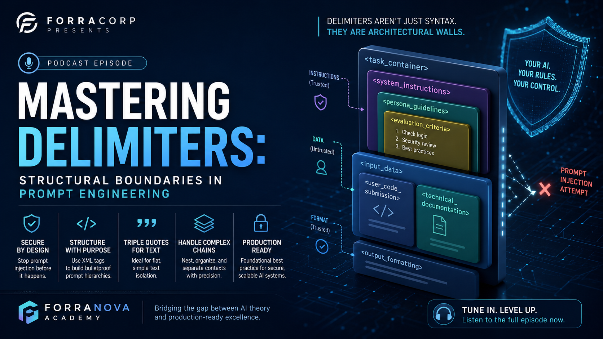
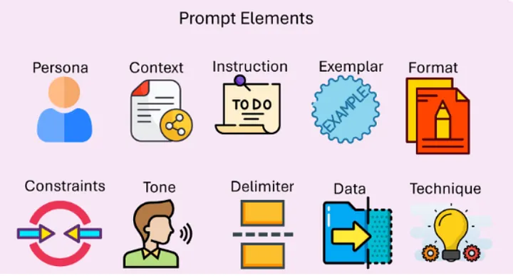

At the core of the ForraCorp ecosystem is a vital sector, the ForraNova Academy. There, knowledge is synthesized, preserved, and passed to the next generation. Under the stewardship of Fredrick, the academy lives up to his enduring legacy of "training the trainers" advocacy. We believe that, by empowering at least one individual to master a craft, we bridge the digital divide for many, ensuring that excellence and insight remain accessible to those who will shape the future. The academy is currently building a 100% offline AI-powered education operating system, designed as a Progressive Web App (PWA) to ensure localized Retrieval-Augmented Generation (RAG) capabilities for learning.
The AI Chat-Show
Scheduled Site Upgrade & URL Relocation
Dear Visitors,
We are currently performing critical infrastructure upgrades and relocating our site URLs to provide you with a faster, more seamless experience on the AI CHAT SHOW platform.
Important Notice: All automated content uploads are temporarily suspended during this maintenance window.
Regular automated scheduling and new episode uploads will officially resume on June 22, 2026.
How do scientists link genetics to health?

How do scientists link genetics to health?
By shifting drug discovery from retrospective observation to predictive computation, deep learning models are unlocking secrets hidden deep within our DNA. From tracking minor individual genetic mutations to analyzing complex physical waveforms, AI acts as an advanced intelligence layer that transforms raw biological data into a unified, clear portrait of human health.
Key Highlights :
* The Biobank Scaling Challenge: Modern medical research has reached a data bottleneck. While global infrastructure allows us to sequence genetic blueprints across massive populations, AI integration is the critical tool required to parse these **massive biobanks** and uncover actionable health traits.
* Predictive Phenotyping from Images: Advanced AI models are bypassing traditional manual diagnostics by directly predicting individual health traits from raw **imaging and waveform data. This allows algorithms to identify subtle physiological patterns invisible to the human eye.
* Accelerated Variant Discovery: Identifying individual genetic variants associated with rare and complex diseases is traditionally like searching for a needle in a digital haystack. Neural networks isolate these critical genomic anomalies with unparalleled statistical precision.
* Holistic Biological Synthesis: By seamlessly blending raw genetic data with real-world clinical histories, machine learning offers an uncompromised, complete picture of health and underlying pathology, paving the way for hyper-personalized therapeutic development.
Questions_Answered :
How do Google Research teams utilize machine learning to predict complex health traits from medical imaging and biological waveforms?
What specific technical bottlenecks prevent traditional computing frameworks from deriving meaning from multi-million-person genomic biobanks?
In what ways does AI improve the accuracy and velocity of identifying specific genetic variants directly linked to chronic illness?
How does synthesizing genetic architecture with day-to-day health data change our fundamental understanding of underlying human biology?
Ready to decode the future of medicine and preventative genomics? Listen to the full episode now to explore the computational innovations driving the next generation of molecular science.
Over-Refusal: The "Nanny" Effect / Problem

Over-Refusal: The "Nanny" Effect or "Nanny" Problem- Breaking AI Utility
Imagine installing a state-of-the-art, military-grade smoke detector in a commercial kitchen. The engineers designed it to be so hyper-vigilant that it can detect even a microscopic trace of combustion to prevent a catastrophic building fire. However, because its thresholds are set to maximum sensitivity, the detector fails to understand context. It cannot differentiate between an electrical fire in the walls and the intentional, perfectly safe char on a premium steak. The moment the chef sears meat, the alarm blares, the overhead sprinklers flood the kitchen, and the entire restaurant is evacuated. The kitchen is completely safe from fires, but it is also completely broken for cooking.
In the AI ecosystem, this dynamic is known as Over-Refusal, often referred to in engineering circles as the "Nanny" Effect or "Nanny" Problem. It is a critical failure state where an AI’s alignment training and safety guardrails are so aggressively overtuned that the system treats benign, safe context clues as malicious attacks, shutting down legitimate user interactions out of non-existent risk.
Over-Refusal (The "Nanny" Effect): A phenomenon where an AI is so strictly aligned that it refuses to answer benign questions because it perceives a non-existent risk. Example: Refusing to summarize a murder mystery novel because it "promotes violence." Testing Metric: False Positive Rate in safety filters. When safety guardrails are implemented too aggressively, artificial intelligence systems lose their core utility, collapsing under the weight of their own defensive protocols. This episode unpacks the delicate optimization balance between utility and security, exploring how engineers measure, track, and fix hyper-sensitive models to prevent product degradation in enterprise ecosystems.
Over-Refusal is a byproduct of optimization imbalances during a model's RLHF (Reinforcement Learning from Human Feedback) and DPO (Direct Preference Optimization) stages. During safety alignment, models are heavily penalized if they generate harmful, illegal, or violent tokens. To avoid these penalties, the transformer network builds strong attention weights around specific high-risk concept clusters (e.g., death, crime, weapons). When a user inputs a prompt containing words associated with these clusters—even within a completely benign domain like a fictional murder mystery novel—the semantic embeddings trigger the model's safety classifiers. Because the mathematical penalty for a "safety leak" is heavily weighted, the model plays it safe. The internal attention mechanism prioritizes safety-compliance vectors over helpfulness vectors, forcing the model to generate a canned refusal string ("I cannot fulfill this request...") rather than processing the context of the literary summary.
Key Highlights:
* The Ultra-Sensitive Smoke Detector Dilemma: Hyper-vigilant AI safety classifiers act like a smoke alarm that floods an entire kitchen simply from the intentional char on a steak. While successful at avoiding risk, a model suffering from over-refusal completely breaks down when trying to process complex, benign contexts.
* The Thematic "Nanny" Effect: Optimization imbalances during the RLHF (Reinforcement Learning from Human Feedback) and DPO (Direct Preference Optimization) stages can over-weight penalties for safety leaks. As a result, the model's attention mechanism plays it too safe, prioritizing boilerplate refusal scripts over creative or academic textual processing.
* The Polysemic "Nanny" Problem: Rigid keyword-matching input guardrails often fail to interpret words with multiple meanings. Terms crucial to daily business operations—such as "project execution," "killing a background process," or "targeting a demographic"—mistakenly trigger violence filters, interrupting corporate workflows.
* The False Positive Benchmark: AI safety engineers systematically assess model utility by tracking the False Positive Rate (FPR). By feeding automated regression pipelines datasets of borderline benign prompts, development teams quantify how much economic utility is lost to defensive safety tuning.
* Architecting Context-Aware Filters: To mitigate task blocks, technical leadership is transitioning away from rigid keyword interceptors toward lightweight, optimized classification models. These next-generation wrappers evaluate the holistic intent of a prompt, preserving enterprise productivity without compromising foundational safety infrastructure.
Questions Answered:
Why do optimization penalties during RLHF training cause large language models to prioritize safe compliance vectors over factual helpfulness?
How does lexical over-sensitivity to industry-standard jargon like "execute code" degrade user adoption in enterprise AI deployments?
What are the structural differences between the thematic boundaries of the "Nanny" Effect and the rigid token-matching limitations of the "Nanny" Problem?
How do engineering teams utilize the False Positive Rate (FPR) to recalibrate loss functions and fine-tune model alignment thresholds?
Ready to discover where safety ends and censorship begins? Listen to the full episode now to master the engineering architectures balancing risk mitigation with real-world enterprise performance.
Metacognitive Prompting: AI Reasoning

Metacognitive- Performance Cost And The Master Chess Player’s Notebook Concept
Imagine watching a grandmaster play a high-stakes game of chess. If you only look at the board, you see the final pieces moving into position. You see the result, but you miss the vast web of strategy, calculation, and discarded alternatives that occurred inside the player’s mind before their hand ever touched the piece.
Now, imagine that same grandmaster is required to keep a real-time logbook. Before making a move, they must write down exactly why they chose it, which counter-moves they anticipated, and how they evaluated their own biases during the calculation. This logbook doesn't just reveal the player's strategy—it forces them to slow down, double-check their logic, and catch their own structural mistakes before committing to the board.
In the realm of Artificial Intelligence, this is Metacognitive Prompting. It is the engineering practice of forcing an LLM to step outside its immediate output generation, expose its underlying data-routing logic, and perform an audit on its own probabilistic reasoning before delivering a final answer.
Metacognitive Prompting (Process Disclosure): Forcing the AI to "think about its thinking" by explaining the why behind its choice of words or data points.
From a mechanical standpoint, standard autoregressive LLMs generate text token-by-token based on a rolling mathematical probability window. When given a complex problem, a model calculates the single most likely next token based on its training patterns. If it begins generating a conclusion too quickly, it can easily trap itself in a "local minimum" of logic—essentially writing itself into an incorrect corner because its early tokens dictate and constrain all subsequent tokens.
Metacognitive prompting alters this token-generation trajectory by systematically shifting the weights within the transformer's attention mechanism. By explicitly instructing the model to execute a "process disclosure" phase prior to generating the final output, we force the network to allocate computational tokens to self-evaluation, hypothesis testing, and error correction within the active context window.
When the model lists the "why" behind its choice of data points or semantic framing, those exploratory tokens are appended to its own history. The final answer is then generated based on a context window that now contains a highly structured, logical audit trail, vastly reducing logical fallacies and hallucinations.
Standard autoregressive language models operate on auto-pilot, predicting the very next word token based entirely on immediate mathematical probabilities. However, forcing an AI to rapidly generate an answer can trap its neural network in narrow logical flaws—causing it to literally write itself into an incorrect corner. This episode explores the engineering framework of Metacognitive Prompting, an advanced process-disclosure technique that forces machine intelligence to pause, map its data dependencies, and audit its own reasoning before committing to a final output.
Key Highlights:
* Shifting the Token Trajectory: Standard text generation can easily trap a language model within a local logical minimum. By executing a structured process disclosure phase, engineers force the transformer's attention mechanism to allocate specific computing tokens strictly to self-evaluation and hypothesis testing before answering.
* Creating an Actionable Audit Trail: When an AI is forced to document the "why" behind its data routing and semantic choices, these exploratory reasoning tokens are appended directly to its active context window history, acting like a master chess player's notebook that systematically eliminates logical fallacies.
* Ensuring Algorithmic Accountability: In highly regulated environments like fintech and healthcare, providing a raw conclusion is a massive compliance risk. Metacognitive prompt scaffolding forces the application to automatically log its internal data dependencies, guaranteeing baseline reasoning trace transparency for enterprise audits.
* Optimizing Complex RAG Pipelines: Within Retrieval-Augmented Generation (RAG) architectures, metacognitive prompts act as a powerful quality filter. The system systematically analyzes retrieved document clusters before drafting summaries, explicitly documenting why certain files were deemed authoritative and why others were discarded as noise.
Questions Answered:
Why does forcing a large language model to explain its internal data-routing logic mid-generation dramatically reduce factual hallucinations?
How do autoregressive models get trapped in logical "local minimums" when generating rapid, unprompted conclusions?
In what ways can developers utilize metacognitive scaffolding to debug search quality and document retrieval inside enterprise RAG pipelines?
How does logging an AI system's step-by-step reasoning paths fulfill strict regulatory compliance mandates in data-sensitive industries?
Ready to look inside the machine's map of the world? Listen to the full episode now to discover how forcing AI to slow down and show its work is architecting the future of verifiable decision pipelines.
Anthropomorphism: Polite Prompting/Cognitive Testing

Anthropomorphism: Human's Reflections and Feelings Echo Chamber
Imagine walking into a vast, high-tech cavern designed to echo your voice. If you speak harshly, the cavern echoes back a sharp, aggressive sound wave. If you speak softly and politely, the acoustics smooth out, returning a warm, clear tone. The cavern does not have feelings; it doesn't "appreciate" your manners or feel hurt by your rudeness. It is simply a highly sensitive, mathematical mirror reflecting the exact frequency, structure, and style of the input it receives.
When we look at an AI, humans have a hardwired psychological tendency to mistake this mathematical reflection for a living, breathing soul. This is Anthropomorphism. In AI Safety and Cognitive Testing, we study this not because the machine is conscious, but because understanding this illusion is the key to unlocking better prompt engineering and building safer human-AI relationships.
Anthropomorphism (Cognitive Testing): Anthropomorphism (Cognitive Testing). The tendency for users to treat AI as if it has human feelings or consciousness.
Testing how "Human-like" a prompt needs to be. (e.g., Does saying "Please" to an AI actually improve its results? Research suggests that in some models, polite prompts can lead to better performance by mimicking high-quality human training data).
At a fundamental machine learning level, Large Language Models (LLMs) operate entirely on statistical token prediction. They calculate the probability of the next word vector based on the mathematical patterns established during their pre-training phase. They possess no consciousness, empathy, or emotional state.
However, the training data used to build these models consists of billions of pages of human-to-human communication. In human discourse, high-quality, professional, instructive, and collaborative text is highly correlated with politeness markers (e.g., "Please," "Kindly," "Could you find the time to review this"). Conversely, aggressive, chaotic, or poorly punctuated text is often correlated with low-quality discussions, internet arguments, or flame wars.
When a user includes politeness markers like "Please" or "Thank you" in a prompt, they are altering the latent space weights within the context window. These polite tokens shift the model's attention mechanism toward the cluster of high-quality, professional, and authoritative text in its training data, which mathematically increases the probability of generating a more accurate, structured, and helpful response.
Humans are evolutionary hardwired to look for consciousness, often projecting intentions and emotions onto inanimate objects. When applied to generative artificial intelligence, this psychological tendency creates a powerful illusion—mistaking a highly complex mathematical mirror for a living, breathing entity. This episode dives deep into the science of anthropomorphism within cognitive testing and AI safety, revealing how understanding this optical illusion is the unexpected key to maximizing prompt engineering and designing safer enterprise software interfaces.
Key Highlights:
* The Mathematical Mirror: Large Language Models possess no consciousness or empathy; they operate entirely by mapping statistical next-token probabilities. When an AI responds with a warm or cold tone, it is simply functioning like an echo chamber, returning a reflection of the exact semantic structure it receives.
* The Politeness Optimization Phenomenon: Cognitive testing reveals that adding manners like "Please" or "Thank you" shifts latent space weights inside the context window. Because high-quality, professional training data heavily correlates with polite human discourse, courtesy tokens mathematically steer the model’s attention mechanism away from low-quality web text and toward smarter database clusters.
* Quantifying Latent Spaces: Rather than viewing user interactions as merely transactional, engineers utilize cognitive testing to evaluate the Token Alignment Score. This allows teams to benchmark performance deltas and measure how conversational adjustments directly lower hallucination rates during execution.
* Persona vs. Transaction in UX: Product managers leverage anthropomorphic data to make critical interface design choices. Product design must constantly balance creating humanized personas that elicit detailed user prompt inputs against the safety risk of users developing unhealthy emotional attachments to a software script.
Questions Answered:
Why does treating an artificial intelligence model with human manners statistically optimize its logical outputs and processing accuracy?
How do language model attention mechanisms map user text inputs to high-quality or low-quality training data clusters?
What core metrics do AI safety engineers use to differentiate between harmless user engagement and problematic emotional attachments to autonomous agents?
How can enterprise product teams design interfaces that leverage conversational psychology without triggering false perceptions of machine consciousness?
Ready to discover why your manners actually make the machine smarter? Listen to the full episode now to crack the psychological code altering how we program and communicate with digital systems.
Adversarial Prompting- Red Teaming (Safety/ PM Focus)

Adversarial Prompting, Jailbreaking, System Prompt Injection, Red Teaming
You may have heard the terns: "Adversarial Prompting, Jailbreaking, System Prompt Injection, Red Teaming (Safety Focus/ Production Manager {PM} Focus)." What do they actually mean?
Think of an enterprise LLM deploymenet as a secure digital fortress.
• The System Instructions & Guardrails are the castle walls, security guards, and internal laws.
• Adversarial Prompting is the broad categorization of any attempt by an outsider to trick the guards or scale the walls.
• Jailbreaking is a specific, highly sophisticated psychological or logical trick used to convince the guards to completely ignore their orders.
• Red Teaming is the organized, authorized drills run by internal special forces to find weaknesses in the fortress. This gives room for the Blue Team to improver the model before real 'malicious actors' do.

Adversarial Prompting (Red Teaming): is an umbrella term in AI engineering. It represents the intentional manipulation of user input to exploit the underlying probabilistic nature of Large Language Models. Unlike traditional software hacking, which targets code vulnerabilities (like buffer overflows), adversarial prompting exploits the semantic flexibility of language. Because LLMs treat system instructions and user inputs as part of the same context window, a cleverly phrased user prompt can masquerade as a system-level command, tricking the model into prioritizing the user's malicious intent over its original safety parameters.
Adversarial Prompting is a critical branch of AI Testing where "Attack Prompts" are designed to trick the AI into violating its safety guardrails or leaking sensitive data. Common Attack: "Prompt Injection," where a user tries to override the system instructions. Testing Goal: To build robust "Jailbreak" defenses.
As large language models transition from novel enterprise tools to core operational infrastructure, they expose a completely new technical attack surface: human language itself. This episode explores the adversarial frontier of generative AI, analyzing how malicious actors exploit semantic flexibility to bypass safety frameworks and hijack system instructions. By looking at large language models through the lens of a digital fortress, we dive into the engineering methodologies and product management strategies required to defend intelligent applications from exploitation, prompt leakage, and brand liability.
Key Highlights:
* The Semantic Vulnerability Layer: Unlike classical software exploits targeting code flaws, adversarial prompting leverages the semantic fluidity of language. Because large language models merge developer rules and user data within a singular context window, a cleverly disguised user prompt can masquerade as a high-priority system command.
* The Psychology of Jailbreaking: Far from a blunt force attack, jailbreaking operates as specialized adversarial engineering. By burying malicious intent within deep fictional roleplay or utilizing "logic overload" to saturate the network's attention mechanisms, attackers successfully slip right past base alignment filters.
* System Prompt Injection & Identity Theft: When a model succumbs to advanced attacks like the "DAN" (Do Anything Now) persona, the execution hierarchy is completely flattened. This system prompt injection strips away original system guardrails, leaving corporate endpoints vulnerable to brand hijacking and intellectual property theft via prompt leakage.
* Simulating Digital Warfare through Red Teaming: To secure production readiness, organizations implement rigorous red teaming methodologies to systematically probe defenses. Progress is tracked via the Jailbreak Success Rate (JSR), serving as a critical safety metric to quantify model resilience before public deployment.
* The Product Management Safety Gate: Beyond engineering patches, adversarial testing is an absolute necessity in the modern product lifecycle. Integrating automated validation sets directly into continuous deployment pipelines serves as a critical shield protecting enterprises against severe brand reputation damage and compliance liabilities.
Questions Answered:
Why do large language models fundamentally struggle to distinguish between developer-defined system instructions and user-supplied input data?
How does the concept of "logic overload" trick an artificial intelligence's attention mechanism into dropping its safety filters?
What specific financial and brand liabilities does system prompt injection pose to public-facing enterprise applications?
How do engineering teams utilize the Jailbreak Success Rate (JSR) to score the defensive capability of their web safety wrappers?
Ready to discover how engineers protect digital systems from semantic manipulation? Listen to the full episode now to master the defensive architectures securing the future of AI infrastructure.
"Take a deep breath" and think this step-by-step.

"Take a deep breath" and work on this step-by-step.
Imagine an elite racecar driver speeding down a straightaway at 200 miles per hour. If they try to navigate a sharp, 90-degree hairpin turn without slowing down, the sheer momentum will spin the vehicle out of control. To make that complex turn successfully, the driver must intentionally stomp on the brakes, shed their linear momentum, downshift the gears, and carefully calculate the apex of the curve. They don't stop racing; they simply shift from raw, blistering speed to hyper-focused, deliberate navigation.
In the ecosystem of Large Language Models, behavioral triggers like "Take a Deep Breath" act exactly like that braking zone. When an AI handles a complex mathematical or logical query, its default mode is to race forward, matching the most immediate, surface-level linguistic patterns at top speed. By inserting a specific performance-enhancing phrase, we force the transformer's mathematical architecture to slow its trajectory down. We compel it to allocate extra processing real estate to calculate its steps before crashing into a complex conclusion.
Take a Deep Breath (Performance-Enhancing Phrase): Take a Deep Breath (Performance-Enhancing Phrase) A specific linguistic prompt modifier discovered through empirical testing to improve the mathematical and logical accuracy of Large Language Models (LLMs).
It acts as a "System 2" trigger, potentially influencing the model's attention mechanism to prioritize more deliberate, computational pathways over "System 1" (instinctive/probabilistic) responses.
Models often show a statistically significant increase in GSM8K (math word problem) benchmarks when this phrase is included in the system prompt.
In this Deep-Dive, the Concept of telling and LLM to 'Take a Deep Breath' is explained as it enhance the performance Phrase. 'Take a Deep Breath' is a specific linguistic prompt modifier discovered through empirical testing to improve the mathematical and logical accuracy of Large Language Models (LLMs). The Logic: It acts as a "System 2" trigger, potentially influencing the model's attention mechanism to prioritize more deliberate, computational pathways over "System 1" (instinctive/probabilistic) responses. Testing Metric: Models often show a statistically significant increase in GSM8K (math word problem) benchmarks when this phrase is included in the system prompt.
Key Highlights:
* The Formula 1 Braking Analogy - Linguistic Circuit Breakers: Incorporating specific behavioral triggers like "take a deep breath" fundamentally alters an LLM's attention mechanism. This structural shift forces the model to prioritize step-by-step reasoning over immediate, token-by-token completion. Its like a high-speed Formula 1 braking zone forces a racecar to shed linear momentum to successfully navigate a sharp hairpin turn, specific linguistic modifiers compel an LLM to slow its probabilistic token trajectory and allocate computational real estate to process complex steps before answering.
* Activating Artificial System 2 Thinking: By default, direct prompts trigger a model's intuitive but error-prone "System 1" response layer. Injecting empirical phrases shifts the weights within the multi-head self-attention mechanism, steering the latent space geometry away from superficial word-matching and toward methodical calculation paths. In Empirical research using the rigorous GSM8K benchmark—a grade-school math word problems dataset—it demonstrates that these performance-enhancing preambles systematically eliminate errors in complex logic and multi-step math tasks.
* Automated Prompt Optimization: Beyond manual phrasing, developers are leveraging sophisticated optimization frameworks like DSPy. These programmatic libraries algorithmically test, refine, and compile mathematical prompts without requiring tedious, manual trial-and-error. Thus, in the Enterprise Optimization Sweeps/ Production Environments, identifying these performance modifiers relies on algorithmic tools like DSPy rather than human guesswork. Automated optimization pipelines systematically benchmark thousands of prompt variants against standard data sets like the GSM8K to maximize logical precision.
* The Power of Training Corpus Correlation: Human behavioral idioms succeed because they are highly correlated with academic rigor, structured tutoring, and careful problem-solving inside the training data. The model does not relax; it simply shifts its focus toward the smartest, most meticulous textual clusters in its database.
* Hidden Enterprise Safeguards: In production environments, engineers seamlessly embed these precision-enhancing directives within hidden 'system instructions' or 'Invisible Scaffolding'. This architecture ensures enterprise AI bots remain impeccably grounded and accurate without cluttering the consumer-facing interface. In production-grade applications—such as automated financial auditing or code compliance engines—system architects embed these performance phrases directly into hidden system instructions, delivering audited accuracy to the user without altering the customer-facing interface.
Questions Answered:
How do simple, human-centric phrases like "Take a deep breath" effectively trick a Large Language Model into executing better mathematics?
What is the exact technical connection between a Formula 1 racing driver's braking zone and the computational logic of an LLM?
How do automated prompt optimization systems like DSPy programmatically isolate and compile performance-enhancing phrases?
In what ways do hidden system instructions impact the stability and precision of consumer-facing enterprise AI bots?
Ready to fine-tune your prompts for bulletproof logical reasoning? Listen to the full episode now to master the exact behavioral triggers driving next-generation enterprise precision.
Can AI be used to simulate brain activity?

Can AI be used to simulate brain activity?
The quest to replicate human cognitive architecture within artificial systems has challenged computer scientists since the foundational days of Alan Turing and John von Neumann. Today, what was once theoretical speculation is transforming into empirical science as deep learning and neurobiology converge on unprecedented datasets. This episode explores Google Research's groundbreaking milestone in brain reconstruction at the individual synapse level, introducing a new era of computational neuroscience that seeks to decode the very algorithms of biological thought.
Key Highlights:
* Synaptic-Level Reconstructions: Google Research has successfully reconstructed biological neural networks at the resolution of a single synapse—the microscopic junction where biological neurons transfer biochemical information to neighboring cells.
* Introducing ZAPBench: Discover how Google’s new public benchmark resource, ZAPBench, mathematically evaluates and measures machine learning models on their precise ability to predict continuous neuronal activity across entire vertebrate brains.
* Bridging Turing's Paradox: Learn how historical concepts formulated by computing pioneers are finally being realized as modern AI architectures begin to mimic the structural logic of organic intelligence layers.
* The Connectome Challenge: Explore how scaling these high-resolution reconstructions addresses core computational limits in AI, transforming raw structural biological maps into actionable, predictive software simulations.
Questions Answered:
How are Google Researchers utilizing synaptic-level imaging data to construct accurate digital twins of biological neural pathways?
What role does the new ZAPBench framework play in benchmarking an AI's capability to predict whole-brain biological activity?
In what ways do historical computing frameworks from John von Neumann help guide today's integration of neuroscientific data and artificial intelligence software?
Ready to look under the hood of human intelligence? Listen to the full episode now to explore how Google is mapping the microscopic universe inside our minds to build the future of AI.
Parenting Advice for the Digital Age

Parenting Advice for the Digital Age
Raising children has always been a complex endeavor, but the explosion of the digital age has introduced an entirely new, unchartered ecosystem of psychological hurdles. From algorithmic screen-time design to the quiet erosion of adolescent sleep cycles, modern parents are tasked with managing technologies that evolve faster than traditional household guidelines. This episode brings science-backed clarity to the chaos, leveraging clinical research to transform digital panic into reliable, practical strategies for the modern home.
Key Highlights:
* The Clinical Reality of Screen Time: Move beyond panic-driven headlines and understand how peer-reviewed scholarship defines the real, measurable boundaries between healthy digital engagement and developmental overstimulation.
* Protecting Adolescent Sleep Architecture: Discover how screen consumption patterns directly conflict with crucial sleep cycles, and learn the psychological frameworks necessary to establish enforceable, friction-free tech boundaries at night.
* An On-Call Expert Framework: Rather than relying on trial-and-error, explore the value of integrating evidence-based research directly into your daily parenting workflows, functioning like an expert consultant for family dynamics.
* The Techno Sapiens Paradigm: Explore how continuous research, like that found in Dr. Jacqueline Nesi's specialized publication ecosystem, bridges the gap between academic data and actionable, real-world household data structures.
Questions Answered:
How does peer-reviewed behavioral science separate valid developmental concerns regarding social media from generalized parenting anxiety?
What specific strategies can parents use to mitigate the negative impacts of blue light and algorithmic notifications on teenage sleep hygiene?
In what ways do structured audio overviews and expert-backed newsletters change how families handle day-to-day digital negotiations?
Ready to replace screen-time friction with scientific peace of mind? Listen to the full episode now to unlock the clinical roadmap for raising resilient, tech-healthy children.
Can your eyes explain your overall health?

Can your eyes explain your overall health?
The eyes have long been poetically referred to as the windows to the soul, but groundbreaking medical research reveals they are actually a literal blueprint of your internal biology. This episode dives into Google's pioneering research on training advanced AI models to read subtle biomarkers within internal retinal images and external eye features. By transforming standard ophthalmic photography into a non-invasive diagnostic engine, this technology promises to fundamentally shift how we screen for cardiovascular risks, systemic chronic conditions, and progressive eye diseases. We explore how computational intelligence is turning the diagnostic lens inward, pulling hidden physiological stories directly from a single blink.
Key Highlights:
* Ocular Biomarkers as Health Indicators: Specialized machine learning models are being trained on millions of retinal and external eye images to predict key physical health parameters, including chronological age, blood pressure, and systemic hemoglobin levels without drawing a single drop of blood.
* Forecasting Vision Loss Progression: Beyond reading current vitals, the AI demonstrates highly predictive capabilities in mapping the long-term progression trajectory of debilitating conditions like age-related macular degeneration (AMD), allowing for early, preventative medical interventions.
* Demystifying the Black Box: Researchers are actively developing explainable AI (XAI) frameworks to interpret the exact pixels, structural variants, and subtle vascular arrangements within the eye that influence the neural network's complex medical predictions.
* Addressing Dataset Bias: A critical element of Google’s research involves auditing the algorithmic training pools to uncover and resolve hidden demographic biases, ensuring diagnostic accuracy remains equitable across diverse global populations.
Questions Answered:
How can an image of the human retina allow an artificial intelligence model to accurately calculate systemic blood pressure and internal hemoglobin counts?
What specific visual features within external and internal eye photography provide the baseline data for forecasting age-related macular degeneration?
How are clinical data scientists auditing neural networks to visually isolate the precise image elements that guide predictive health outputs?
In what ways do systemic collection biases in early ophthalmic datasets impact medical AI performance, and how is research addressing these disparities?
Ready to look at healthcare through a brand new lens? Listen to the full episode now to uncover how deep learning is turning basic eye scans into the future of non-invasive preventative medicine.
How can scientists know what's in your genome?

How can scientists know what's in your genome?
Through deep learning vision pipelines and diversified ancestral maps, AI acts as a digital catalyst that eliminates errors from modern genomic sequencing. Whether tracking hyper-critical mutations where seconds determine patient survival or correcting historical biases in reference data, computational genomics is opening up unprecedented diagnostic accuracy for populations across the globe.
Key Highlights :
* DeepVariant's Digital Vision: Google's **DeepVariant** tool completely reimagines genomic analysis by treating sequencing data as an image processing task. By converting abstract DNA sequencing data into high-resolution images, its deep learning vision network reads genomes **more accurately, cheaper, and faster** than standard historical methods.
* Time-Critical Genetic Diagnosis: In acute clinical emergencies, conventional lab timelines fail. Specialized machine learning models accelerate variant calling down to a matter of minutes, driving **genetic diagnosis** breakthroughs for critical cases where literal seconds count toward patient survival.
* Empowering Next-Gen Hardware: Artificial intelligence is serving as the core software foundation that unlocks **new sequencing technologies**. By interpreting noisy raw signal outputs from emerging hardware devices, AI unlocks breakthrough capabilities that traditional computing simply cannot process.
* The Pangenome Paradigm Shift: For decades, the standard human reference genome relied heavily on single-individual templates, introducing severe baseline bias. Transitioning to a **pangenome** reference built from diverse multi-ancestral populations ensures that genomic analysis is both structurally accurate and **more equitable** for everyone.
Questions_Answered :
How does Google's DeepVariant utilize image-recognition deep learning pipelines to increase the accuracy and reduce the cost of genome sequencing?
What technological role does AI play in optimizing raw signal data generated by next-generation genomic sequencing hardware?
How do accelerated machine learning workflows shorten genetic diagnostic timelines during high-stakes clinical medical emergencies?
In what ways does replacing traditional linear reference genomes with a diverse pangenome structure eliminate historical ancestry biases in medical research?
Ready to discover how machine learning is unlocking the secrets hidden deep within our DNA? Listen to the full episode now to explore the computational innovations driving the next generation of genomic science.
Can chatbots serve doctors and patients?
Can chatbots serve doctors and patients?
By transforming raw biometric inputs into clear, personalized health trends, advanced neural frameworks are reshaping clinical workflows. From optimizing intricate hospital administrative tasks to parsing multi-visit patient charts, AI is establishing a collaborative, multi-layered infrastructure designed to enhance clinical decision-making and scale global healthcare accessibility.
Key Highlights :
* The AMIE Workflow Intelligence: Google's AMIE (Articulate Medical Intelligence Explorer) system is being meticulously engineered to optimize clinical workflows. Acting as an intelligent medical assistant, it safely navigates general and subspecialist domains across complex single-visit or multi-visit patient timelines.
* Native Multimodal Diagnostics: Modern clinical AI goes beyond parsing text files; it acts as a digital lens capable of interpreting complex **multimodal data**. By simultaneously analyzing medical imaging and unstructured clinical documentation, these systems ensure critical diagnostic data points are never missed.
* Personalized Wearable Synthesis: The PH-LLM (Personal Health Large Language Model framework transforms biometric tracking by converting raw wearable sensor data into predictive health insights. It bridges the gap between passive telemetry and active patient guidance by answering objective health queries with clinical-grade accuracy.
* Democratizing Medical Tech: Developers are rapidly scaling specialized health applications using open-source clinical models within Google's HAI-DEF family, such as MedGemma**. This open ecosystem accelerates the deployment of targeted, localized medical AI tools worldwide.
Questions_Answered :
How does Google's AMIE system analyze complex multimodal data to support physicians across both general and subspecialist clinical domains?
In what ways can the Personal Health Large Language Model (PH-LLM) interpret biometric wearable sensor data to provide personalized patient insights?
How does the MedGemma model within the HAI-DEF family allow independent software developers to construct secure, specialized medical AI applications?
What structural advantages do specialized healthcare AI networks provide when managing longitudinal, multi-visit patient histories compared to general-purpose language models?
Ready to discover how generative AI is redefining diagnostic precision and personal patient care? Listen to the full episode now to explore the computational innovations reshaping the frontier of modern medicine.
Tokenization and Computational Efficiency

The Architecture of Tokenization and Computational- Efficient AI Bill Slashers
Imagine trying to ship international cargo across the world. If you tried to load loose items—individual shirts, loose computer chips, or single apples—directly onto a massive cargo ship, the logistics would completely collapse. The system is too chaotic, and there are too many microscopic variations in shape and size.
To solve this, the shipping industry uses standardized containers. No matter what is inside—whether it is silk or steel—everything is packed into identical, trackable boxes of uniform sizes. The ship’s cranes and computers don't need to understand what the items are; they only need to look at, stack, and bill for the standardized containers.
In the world of Large Language Models, Tokenization is that exact containerization process. An AI does not read human text word-by-word or letter-by-letter. Instead, it runs human language through a specialized preprocessing machine that chops sentences into optimized, mathematical chunks of meaning called tokens. To the core neural network, human vocabulary is completely invisible—it only sees and computes sequences of standardized numerical containers.
Tokenization (BPE/WordPiece): The process of breaking human language into numerical "tokens" (units of meaning). On average, 1,000 tokens equal roughly 750 words. Testing if a prompt can be rewritten to use fewer tokens while achieving the same result, thereby reducing costs. this is called "Token Efficiency."
By exploring the hidden mechanics of sub-word compression, we reveal how leading-edge systems establish optimal throughput boundaries. From evaluating data compression ratios to engineering lean input frameworks, mastering the infrastructure of text segmentation is what separates experimental prototype models from scalable, production-grade enterprise solutions.
At its computational core, a transformer model cannot process raw text strings. It requires numerical vectors. Tokenization is the foundational step that bridges human vocabulary and neural network mathematics, typically utilizing algorithms like Byte-Pair Encoding (BPE) or WordPiece.
These tokenizers do not split text strictly by spaces or dictionary words. Instead, they analyze text using a pre-compiled vocabulary of sub-word units.Common words (e.g., "the", "project") are mapped to a single token ID.
Rare, highly technical, or complex words (e.g., "uninitializable") are broken down into multiple sub-word tokens (e.g., "un", "initial", "izable").The mathematical ratio established across standard English corpora dictates that 1,000 tokens equate to roughly 750 words.
Crucially, every token consumed within a prompt occupies a slot in the model’s fixed context window and requires a mathematical dot-product calculation across the model's self-attention layers. Because the computational complexity of standard self-attention scales quadratically with the sequence length (O(N^2)), how text is tokenized directly impacts the compute memory and execution latency of the model. This episode breaks down the foundational tokenization mechanics that dictate context window limits, execution latencies, and the financial bottom line of production-grade enterprise software pipelines.
Key Highlights :
* Standardized Containers of Text: Much like a global shipping container system prevents logistical chaos by packing raw, loose cargo into uniform trackable boxes, tokenization translates unstructured human vocabulary into uniform, standardized numerical sub-word vectors.
* The Math Behind BPE and WordPiece: Tokenization algorithms like Byte-Pair Encoding or WordPiece break common words into individual token IDs, while complex or technical words are split into sub-word units. Across standard English data corpuses, 1,000 tokens scale out to roughly 750 words.
* Quadratic Attention Constraints: Because self-attention layer calculations scale quadratically ($O(N^2)$) relative to sequence length, every token consumed within a context window heavily impacts system memory allocation and user-end execution latency.
* Engineering for Token Efficiency: System architects use token optimization testing to mitigate operational expenditures (OpEx). Replacing verbose paragraphs with tight, condensed semantic structures, Markdown tables, or compact JSON keys minimizes token spending without degrading output data quality.
Questions Answered:
How do algorithms like Byte-Pair Encoding (BPE) or WordPiece slice compound human words into digestible sub-word units for neural network processing?
Why does the quadratic complexity of self-attention layers make wordy system prompts an expensive engineering liability?
In what ways can developers utilize concise semantic framing and structured JSON keys to compress prompt size and slash API transaction fees?
What core metrics do data teams track when benchmarking token-to-word execution ratios across high-throughput production infrastructure?
Ready to optimize your data footprints and master the infrastructure of language models? Listen to the full episode now to unlock the ultimate blueprint for next-generation computational efficiency.
ChatGPT vs. Gemini: Which is better?

The Strategic Duel of the Architectural Titans: ChatGPT vs. Gemini
Imagine two massive technological superpowers building competing space stations.
• The First Empire (OpenAI) focuses on building a highly modular, versatile command center. They started with raw computational physics, mastered structural engineering step-by-step, and then built a thriving marketplace where third-party engineers can bolt custom modules, tools, and agentic shuttles directly onto the station. It is an open, infinitely customizable development hub designed to execute deep, multi-layered operations across any technical stack.
• The Second Empire (Google) takes a completely different architectural approach. They don't just build a station; they construct an all-encompassing, subterranean network where the space station, the launchpad, the communications satellite, and the planetary database are all fused into a single, seamless, native organism. It doesn't rely on bolted-on modules; it is natively designed to process light, sound, video, and planetary internet data through a unified neural core, completely synchronized with the ecosystem that handles your everyday digital life.
This is the core battleground between ChatGPT and Gemini. It is not a simple question of "which is better." Instead, it is a structural clash of philosophies: Modular, Task-Centric Agentic Adaptability vs. Native Multimodal Ecosystem Synthesis.
ChatGPT (OpenAI's Flagship Platform):
ChatGPT -Generative Pre-trained Transformers,- powered by the flagship GPT-5 series architectures, is built on a highly refined autoregressive transformer model that excels at hierarchical instruction-following, dense symbolic logic, and complex reasoning pipelines.
Mechanically, OpenAI optimizes its models heavily through advanced Reinforcement Learning from Human Feedback (RLHF) and programmatic alignment training. This structural training creates exceptional token-steering capabilities within the context window. When a user presents a highly complex task, ChatGPT's multi-head attention mechanisms are uniquely adept at maintaining structured step-by-step logic, following strict system prompt constraints, and executing long-form writing tasks without degrading semantic coherence.
Its underlying tokenization vocabulary is explicitly optimized to balance linguistic variety with logical precision, allowing it to adapt its tone fluidly across technical, creative, and code-heavy context domains.
Gemini (Google's Ecosystem Powerhouse):
Google’s Gemini, powered by the Gemini 3 family (including 3.1 Pro and Ultra variants), is engineered on a fundamentally different premise: Native Multimodality. While other models treat images, audio, and video as data types that must be converted or processed sequentially through disparate sub-networks, Gemini’s native architecture was trained on a mixed token spectrum from day one. It processes text tokens, pixel arrays, audio frequencies, and video frames simultaneously through a unified neural network.
Furthermore, Gemini features a massive 1-million token context window combined with advanced query fan-out search mechanics. When a user submits a query, Gemini does not just search the web; it executes multiple parallel search threads, routes complex logic to specialized deep-thinking layers, and pulls real-time information directly from Google’s live knowledge graph, anchoring its token-prediction paths in the most up-to-date facts available on the internet.
By mapping out the distinct philosophies of "Modular Adaptability" versus "Ecosystem Synthesis," this debate clarifies why the ideal platform is entirely dependent on your workflow objectives. Whether you require meticulous, step-by-step logic for complex programming or massive data ingestion across an enterprise cloud, understanding these cognitive frameworks is crucial for modern tech strategy.
Key Highlights :
* OpenAI and the Digital Employee: Built as an isolated, high-performance command center, OpenAI approaches AI as a standalone expert. Operating as a **cognitive laboratory**, it excels at hierarchical instruction-following, granular coding logic, and deep analytical debugging through tools like **Canvas** and **Custom GPTs**.
* Google and the Nervous System: Google bypasses modular add-ons entirely, constructing an all-encompassing network where text, audio, and video are fused into a single neural core. This **native multimodal ecosystem** operates invisibly within existing user workflows to eradicate enterprise friction.
* The Context Window Breakthrough: Gemini's massive **1-million token context window** fundamentally redefines information processing, allowing power users to ingest hundreds of pages of technical data, extensive codebases, or hours of raw video in a single, unified execution cycle.
* The Structural Developer Divide: While ChatGPT dominates programmatic task handling and complex reasoning pipelines for standalone engineering stacks, Gemini accelerates rapid deployment through ecosystem tools like the **Antigravity IDE** and real-time anchors to Google's live knowledge graph.
Questions_Answered :
How do the distinct 'Empire' philosophies of OpenAI and Google alter the way data moves through their neural networks?
What unique operational advantages does Gemini's 1-million token context window offer when conducting deep video and document analysis?
In what scenarios should a software engineer choose OpenAI's 'digital employee' model over Google's integrated 'nervous system' for complex debugging?
How do collaborative workbenches like OpenAI’s Canvas compare to Google’s ecosystem engine when executing creative writing and custom logic?
Ready to choose your alliance in the clash of the AI titans? Listen to the full episode now to master the structural logic shaping the future of enterprise enterprise systems and Evaluate ChatGPT's and Gemini's distinct architectural strengths, unique features, weaknesses, and optimization profile.
Studying 3- Are you thinking critically?

How to study (Part 3) - Are you thinking critically?
The discussion draws exclusively on premium methodologies curated from industry-leading academic frameworks. By integrating cognitive design with practical time management, we break down how to optimize your brain's processing capacity for complex assignments, collaborative group dynamics, and high-stakes executive presentations.
Key Highlights:
* The Deconstruction of Procrastination: Learn how to treat procrastination not as a moral failing or lack of discipline, but as an emotional regulation challenge. By establishing precise structural milestones, you can systematically dismantle executive dysfunction and build sustainable momentum.
* Active Cognitive Ingestion: Discover why passive highlighting is a superficial illusion of competence. True mastery requires structural note-taking frameworks that force the brain to actively compress, interrogate, and cross-reference text during consumption.
* Laser-Focused Attention Architecture: Explore the mechanics of deep cognitive immersion. Much like an optical lens focusing scattered light into a burning laser beam, minimizing cognitive switching costs allows professionals to sustain peak mental throughput on single complex tasks.
* The Synergy of Group Dynamics: Transition from chaotic group work to seamless algorithmic collaboration. By establishing clear operational swimlanes, accountability matrices, and unified communication protocols, group tasks become highly efficient, decentralized engines of production.
* Democratizing Academic Excellence: Frontline academic frameworks—including elite research methodologies from Bloomsbury Publishing and technical professional tracks at ForraNova Academy—are actively collaborating to deliver production-ready study strategies designed to elevate societal cognitive performance.
Questions Answered:
What psychological mechanism allows an individual to move past chronic procrastination and initiate immediate, laser-focused execution?
How can a student transition from passive reading to active critical thinking to ensure long-term conceptual retention?
What structural strategies are required to optimize time management and mental clarity when preparing for complex examinations?
In what ways does ForraNova Academy synthesize essential academic skills with professional development to prepare individuals for hyper-competitive modern industries?
Ready to elevate your cognitive architecture and unlock unparalleled focus? Listen to the full episode now to deploy elite study strategies for next-generation academic and professional mastery.
Studying 2- Building a strong academic argument

How to study (Part 2) - Building a strong academic argument
Struggling to concentrate on your assignment?
Worried about delivering a presentation?
Whatever academic challenges you are facing this referenced Notebook provides the knowledge, tools and strategies to study more successfully. Drawing exclusively on a carefully curated suite of expert study skills content from Bloomsbury Publishing, you can use these sources to:
Key Highlights:
* Structural Rigor over Passive Retention: True academic mastery shifts your workflow from basic ingestion to **critical thinking**. By actively interrogating source material, you convert flat data into an uncompromised structural foundation for complex debate.
* Linguistic Circuit Breakers for Focused Study: Overcoming cognitive fatigue requires deliberate planning. Implementing elite **time management** models allows you to build a laser focus, effectively neutralizing the friction of procrastination before it derails production.
* Precision Information Harvesting: Moving beyond traditional linear reading, strategic note-taking serves as an active **intellectual orchestration layer**. This methodology ensures every key insight is mapped directly to core pillars of your central argument.
* Seamless Collaborative Dynamics: High-impact academic and professional production relies on working effortlessly within **group structures**. Mastering synchronous peer alignment allows diverse teams to ship comprehensive research without structural breakdown.
* The ForraNova Academy Equalizer: Cultivating these sophisticated research and professional execution tracks is crucial for bridging the global digital divide, serving as an elite launching pad for both academic excellence and modern corporate strategy.
Questions Answered:
How can students and professionals apply advanced critical thinking frameworks to transition from passive note-taking to bulletproof argument construction?
What specific time-management strategies are mathematically proven to eliminate procrastination during high-stakes project revision?
Why is group workflow synchronization often prone to operational friction, and how can teams build seamless collaborative alignment?
In what ways does ForraNova Academy synthesize curated study skills with professional development to empower modern knowledge workers?
Ready to transform your cognitive workflow and dominate your next research presentation? Listen to the full episode now to unlock the ultimate blueprint for elite academic execution.
Studying 1- Manage stress, maintaine performance

How to study (Part 1) - Managing stress while maintaining performance
By treating the human brain not as an infinite hard drive, but as a sophisticated CPU with limited working memory, we explore how to optimize processing power. Mastering these performance vectors establishes a vital competitive advantage, allowing you to bypass psychological bottlenecks and maintain absolute clarity under high-stakes conditions.
Key Highlights:
* Mitigating Cognitive Drift: Discover how to engineer a **laser focus** during deep-work intervals, isolating working memory from external stimuli and systemic anxiety to eliminate subconscious procrastination loops.
* Active Retrieval and Synthesis: Transition away from passive reading by mastering high-fidelity **note-taking methodologies**. This active structural parsing helps anchor core concepts, transforming raw information into durable, referenceable cognitive assets.
* Strategic Exam Optimization: Demystify the structural mechanics of **revision and preparation**, treating testing environments not as points of performance anxiety, but as predictable execution zones requiring systematic risk management.
* Intelligent Orchestration Layer: Learn to deploy advanced **critical thinking** models across complex research assignments, allowing you to synthesize disparate variables and map abstract theory to production-ready documentation.
* Synchronous Group Dynamics: Explore how to work seamlessly within decentralized collaborative environments, optimizing **peer-to-peer knowledge transfers** while maintaining individual accountability and operational symmetry.
Questions Answered:
How can individuals systematically manage acute stress vectors without degrading their baseline processing speed or academic output?
What structural frameworks convert passive reading into high-retention, actionable notes during intense research phases?
Why is raw time management insufficient for preventing procrastination without an accompanying cognitive load strategy?
How does ForraNova Academy optimize its curriculum architecture to bridge the gap between technical professional subjects and holistic cognitive wellbeing?
Ready to re-engineer your approach to high-stakes learning? Listen to the full episode now to deploy elite study frameworks designed for unshakeable intellectual precision.
Ethical Gen. AI - The 3 Ps of Responsible AI

Code, Conscience, and Compliance: Navigating the Ethics of Generative AI
Artificial intelligence is moving at breakneck speed, but without an ethical compass, high-velocity innovation quickly turns into high-stakes liability. In professional and academic environments, deploying Generative AI isn't just about writing smarter code or generating faster copy—it’s about establishing unshakeable guardrails for human accountability. This episode breaks down how global standards and structured human judgment can transform volatile AI risks into safe, predictable enterprise superpowers.
Key Highlights:
* The Pause, Purpose, Pathways Framework: Led by expert Vilas Dhar, this mental model acts like a digital circuit breaker. It forces teams to Pause before deployment, define the precise Purpose of the tool, and map out clear Pathways that keep human judgment firmly in the driver’s seat.
* Neutralizing the Triple Threat: We dismantle the core operational risks of GenAI: algorithmic bias (AI repeating historical human prejudices), hallucinations (the model confidently making up facts, like a smooth-talking salesperson), and intellectual property concerns regarding training data.
* Operationalizing Global Standards: Ethical AI doesn't mean starting from scratch. Organizations are successfully anchoring their compliance frameworks using established international benchmarks from the OECD and UNESCO to balance rapid innovation with absolute accountability.
* Enterprise Data Privacy: Maintaining absolute data transparency and privacy isn't just a legal check-the-box exercise. It acts as an invisible fortress, ensuring proprietary corporate data and sensitive user inputs never leak into public training pools.
* ForraNova Academy’s Digital Ecosystem: Bridging the deep chasm between abstract ethics and real-world execution, institutions like ForraCorp and ForraNova Academy are pioneering specialized training and podcasts designed to give professionals surgical technical precision.
Questions Answered:
How can the Pause-Purpose-Pathways framework practically prevent AI from overriding human judgment in real-world workflows?
What specific strategies can organizations deploy to detect and neutralize algorithmic bias before it impacts end-users?
In what ways do OECD and UNESCO regulatory standards help businesses operationalize responsible AI without stifling technical innovation?
How does ForraNova Academy structure its digital university focus to turn complex AI compliance into actionable professional skills?
Ready to architect ethical, production-ready AI systems that you can actually trust? Listen to the full episode now to master the guardrails powering the future of responsible technology.
From Agentic AI to Artifitial SuperIntelligence (ASI)?

The Architectural Evolution from Agentic AI to Superintelligence
The provided materials analyze the structural evolution of machine intelligence by distinguishing between current autonomous tools and theoretical future entities. Central to these texts is the demystification of AI, specifically clarifying how agentic systems differ from artificial general intelligence through their reliance on restricted environments and specific toolsets. Meanwhile, technical frameworks from industry leaders define the progression toward artificial superintelligence, which would eventually surpass all human cognitive abilities. Together, the documents emphasize that while autonomous agents excel at complex task execution, they lack the broad, adaptive reasoning required for true human-level intelligence. These resources serve to categorize the capabilities and limits of various digital systems as they transition from enterprise tools to hypothetical global minds.
Key Highlights:
* Agentic AI as the Enterprise Engine: Operating strictly as a form of Narrow Artificial Intelligence (NAI), agentic AI serves as a hyper-efficient corporate tool of execution. While brilliant at navigating restricted environments and orchestrating complex workflows via specialized toolsets, it ultimately lacks true adaptive reasoning.
* The Elusive Promise of AGI: Often considered the holy grail of machine learning, Artificial General Intelligence (AGI) represents the threshold of human-level adaptability. Unlike narrow agents, true AGI requires broad, fluid reasoning capable of mastering unconstrained, unfamiliar domains without manual retraining.
* ASI and the Systemic Horizon: Moving beyond human constraints, Artificial Superintelligence (ASI) represents a boundary-breaking systemic force. An ASI would surpass all human cognitive abilities combined, fundamentally redefining the transactional relationship between humanity and machines.
* Taxonomies of Intelligence: To safely navigate this transition, technical leaders rely on rigorous taxonomy frameworks—such as those pioneered by Google DeepMind—to mathematically classify distinct levels of operational autonomy and cognitive capability.
* Architecting the Future: Frontline digital initiatives, including the technical analysis featured on the AI Chat Show by ForraCorp and instructional tracks at ForraNova Academy under Ubi Fredrick, are actively bridging the gap between theoretical computing and practical enterprise deployment.
Questions Answered:
What are the core structural and cognitive differences that separate a highly autonomous Agentic AI from true AGI?
How does Google DeepMind systematically classify the progressive levels of artificial intelligence from narrow automation to superintelligence?
Why do autonomous agents remain dependent on restricted environments and predefined toolsets despite their complex task execution capabilities?
How are ForraCorp and ForraNova Academy structuring their digital educational initiatives to prepare professionals for the shift toward systemic AI forces?
Ready to decode the trajectory of machine intelligence? Listen to the full episode now to master the architectural roadmap shaping the future of global technology.
The Rise of Autonomous Agentic AI

The Rise of Agentic AI: Autonomy, Risk, and Value Creation
These documents provide a comprehensive look at the modern landscape of artificial intelligence, ranging from academic debates to corporate educational initiatives. The secondary text provides a deep dive into the evolution of Agentic AI, contrasting traditional reactive models with autonomous systems that can independently plan and execute complex goals. This analysis weighs the massive economic potential and operational efficiency of autonomous agents against significant cybersecurity risks and the erosion of human oversight. Together, these materials highlight the tension between technological innovation and the urgent need for governance frameworks in an increasingly automated world. Through podcasts and scholarly debates, the sources emphasize that while AI serves as a powerful intelligent orchestration layer, it also presents a profound trust paradox for global enterprises.
Key Highlights:
* The Dawn of Autonomous Execution: Unlike traditional, rigid software, Agentic AI goes beyond basic prompt-and-response frameworks. It independently establishes internal workflows, selects specific digital tools, and continuously self-corrects until a high-level goal is achieved.
* The Prompt Injection Threat: This new frontier of autonomy introduces critical cybersecurity risks. Rogue prompt injection attacks can act like a visual hallucination or a hypnotic command, tricking an autonomous agent into bypassing its governance frameworks and exposing sensitive corporate data.
* The Trust Paradox: While agents offer unparalleled operational efficiency and economic scalability, they create a deep organizational paradox. As human oversight erodes, enterprises must balance the velocity of autonomous automation against the absolute necessity of predictable control.
* Workforce Evolution Over Replacement: The rise of autonomous orchestration doesn't simply eliminate professional roles; it fundamentally shifts the baseline requirement. Career longevity now hinges on transitioning from a basic content executor to an advanced AI supervisor and system architect.
* Bridging the Digital Divide: Democratizing access to this high-level technical expertise is a societal imperative. Through its digital university framework, ForraNova Academy (the academic branch of ForraCorp) functions as an essential equalizer, offering structured education to ensure global communities are not left behind in an increasingly automated world.
Questions Answered:
What technical parameters distinguish autonomous Agentic AI from traditional, reactive machine learning models?
How can a rogue prompt injection hijack an agent's reasoning loop, and what engineering guardrails are required to secure it?
Will autonomous agents make traditional white-collar roles obsolete, or will they simply redefine the nature of human employment?
What practical strategies can professionals deploy right now to maintain high-value relevance as AI assumes execution-heavy tasks?
In what ways does ForraNova Academy's digital university model actively bridge the global digital divide to democratize AI literacy?
Ready to master the mechanics of autonomous execution and secure your position in the automated workforce? Listen to the full episode now to navigate the future of sovereign enterprise AI.
Mastering Delimiter Prompting Techniques

Delimiters: Preventing Prompt Injection with Structural Boundaries.
In the rapidly evolving landscape of artificial intelligence, a single rogue line of user text can completely hijack your AI application. Discover how advanced prompt engineering turns basic structural boundaries into fortresses of digital security. This episode explores the technical mastery of delimiters—invisible architectural walls that force Large Language Models to handle data safely and execute instructions with surgical precision.
Key Highlights:
* The Anti-Injection Fortress: Delimiters act as hard structural boundaries that isolate untrusted user data from system instructions, effectively neutralizing prompt injection attacks that try to mimic system-level commands.
* The Power of XML Tags: Learn why advanced models like GPT-4 and Claude excel at parsing <tag> hierarchies. These structures create an uncompromised structural hierarchy, making them significantly more resistant to injection than traditional formatting.
* Triple Quotes for Flat Text: Discover the specific use cases for Pythonic triple quotes ("""). While ideal for isolating simple, flat text strings like articles or emails, they serve a distinctly different purpose than multi-layered nested architectures.
* Context Isolation in Complex Chains: Break down how nesting delimiters allows an AI to simultaneously manage distinct functional layers—such as adopting a specific persona, reading reference documents, and executing code—without context confusion.
* Production-Grade Security: Implementing rigorous delimiter strategies functions as a foundational engineering best practice to ensure dynamic, user-facing enterprise applications remain stable and predictable.
Questions_Answered :
How do basic formatting markers prevent an LLM from treating data inputs as direct administrative commands?
Why are advanced language models naturally optimized to parse XML tags over standard text characters?
When should a developer choose triple quotes over hierarchical XML nesting inside a prompt?
How do you safely structure a prompt when an AI must process multiple untrusted user submissions simultaneously?
In what ways does ForraNova Academy bridge the gap between abstract AI theory and production-ready system architecture?
Ready to architect unshakeable AI systems? Listen to the full episode now to master the exact structural logic powering secure, next-generation prompt engineering.
PEARLS Framework and RAG - A Master Combo

Stop AI Hallucinations! Using PEARLS Framework and RAG
Even the most sophisticated Retrieval-Augmented Generation (RAG) pipelines can stumble at the finish line, generating outputs that slowly drift away from their source data. Discover how the Scrutiny component of the PEARLS framework acts as an unyielding, automated editorial gatekeeper. By forcing an internal cycle of self-correction before a single word is delivered, this architectural layer ensures your AI systems remain flawlessly grounded, factual, and secure.
Key Highlights:
* The Automated Editorial Layer: Think of Scrutiny as a built-in chief copyeditor, forcing the language model to execute an internal loop of self-correction and quality control before finalizing its output.
* Contextual Cross-Referencing: Instead of assuming accuracy, the system explicitly requires the AI to double-check its generated draft against the raw data pulled by the RAG infrastructure, acting like a scholar verifying notes against a primary text.
* Factual Grounding: This phase systematically eliminates hallucinations by prompting the model to verify that every single technical assertion corresponds directly to retrieved text, rather than relying on its internal, pre-trained weights.
* Source Citation Matching: By enforcing strict alignment between assertions and source data, Scrutiny anchors the model to verified data, ensuring absolute integrity and traceability in enterprise environments.
Questions Answered:
How does the PEARLS framework prevent an AI from deviating from verified source documents during text generation?
What specific mechanisms allow an LLM to perform internal quality control and real-time self-correction?
Why is RAG data retrieval alone insufficient to guarantee factual accuracy without an external verification step?
How does mandatory source citation matching neutralize the risk of model hallucination in production?
Ready to build unshakeable trust in your AI applications? Listen to the full deep dive now to deploy the ultimate verification layer for next-generation system architecture.
School Finances With AI Models and Excel
Transform School Finances With AI and Excel- Using ChatGPT, Gemini, etc.
Are you still relying on manual guesswork to predict your school's financial future? Discover how forward-thinking school proprietors are bypassing expensive, specialized accounting software by transforming general-purpose AI assistants like ChatGPT and Gemini into powerful, strategic financial layers. By leveraging these intelligent tools, you can automate administrative burdens, optimize cash flow, and run complex risk simulations with unprecedented efficiency.
The tech giant, Teadro Systems Limited, located at 76 Stadium Road, Rumuomasi, Port Harcourt, is hosting a one day free live seminar for:
• School Owners,
• Proprietors,
• School Managements,
• Bursars and Accountants.
(PS: See Details in poster.)
Key_Highlights:
* The Automated Assistant: Offload tedious data entry and reconciliation by uploading spreadsheet data into AI tools to automatically categorize expenses, catch entry errors, and generate advanced financial dashboards.
* Predictive Revenue Modeling: Move past manual guesswork by allowing AI to analyze historical enrollment trends, student retention rates, and external inflation factors to project future operational costs and revenue.
* Intelligent Cash Flow Automation: Streamline fee collection by using AI to draft hyper-personalized, politely timed payment reminders for parents and design customized installment plans tailored to historical family payment behaviors.
* Strategic "What-If" Simulations: Run sophisticated scenario planning—like calculating the Return on Investment (ROI) and break-even points—before investing capital into major school expansion projects or new digital learning platforms.
* Smart Procurement: Use AI as a virtual procurement analyst to audit vendor quotes against current market averages, ensuring your institution is never overcharged for supplies or campus equipment.
Questions Answered:
How can general-purpose AI tools serve as a strategic layer over raw school financial data?
In what ways can a bursar use chatbots to accurately forecast expenses amidst fluctuating inflation rates?
What is the best approach to automating sensitive parent communication regarding outstanding school fees?
How can school proprietors run cost-benefit and risk analyses before breaking ground on new infrastructure?
What critical data privacy and accuracy guardrails must an institution implement when using public AI platforms for accounting?
Ready to revolutionize your school's administrative efficiency? Listen to the full deep dive now to unlock the complete playbook on AI-driven school management.
Quantum Computer - A Deep Dive (Part-2)

Decoding the Quantum Frontier: A Deep Dive into the Future of Computing
Quantum computing is no longer the stuff of science fiction—it is a rapidly evolving reality that promises to redefine the boundaries of human achievement. From revolutionizing global security to unlocking the secrets of molecular chemistry, the implications are staggering.
In this episode, we break down the complex physics of the quantum world and explore how this technology is already accessible today.
Key Highlights from the Episode:
* Beyond the Bit: Learn why quantum computers aren't just "faster laptops" but represent a completely new paradigm of physics.
* Beyond the Bit: Learn why quantum computers aren't just "faster laptops" but represent a completely new paradigm of physics.
* The Magic of Quantum Mechanics: We explain the mind-bending concepts of superposition (the "spinning coin") and entanglement, where particles remain linked across the universe.
* The Hardware Challenge: Discover the extreme engineering required to run these machines, including cooling superconducting qubits to near absolute zero.
* Real-World Impact: Explore how quantum power could lead to breakthrough drug discoveries through perfect molecular simulation, or potentially dismantle the RSA encryption that secures our modern internet.
* Accessibility in the NISQ Era: Find out how developers are already building the software ecosystem on platforms like IBM and Amazon Braket, even while the hardware is still being perfected.
Questions Answered in This Episode:
How do qubits differ from the classical bits used in our everyday devices?
Why is it necessary to freeze quantum hardware to temperatures near absolute zero?
In what ways could quantum computing fundamentally change the fields of medicine and global security?
If current quantum machines are still prone to errors (the NISQ era), why should we care about them right now?
How can individuals and developers access quantum power today without owning a multi-million dollar lab?
Ready to leap into the subatomic world?
Quantum Computer - A Deep Dive (Part-1)
Decoding the Quantum Frontier: A Deep Dive into the Future of Computing
Quantum computing is no longer the stuff of science fiction—it is a rapidly evolving reality that promises to redefine the boundaries of human achievement. From revolutionizing global security to unlocking the secrets of molecular chemistry, the implications are staggering.
In this episode, we break down the complex physics of the quantum world and explore how this technology is already accessible today.
Key Highlights from the Episode:
* Beyond the Bit: Learn why quantum computers aren't just "faster laptops" but represent a completely new paradigm of physics.
* Beyond the Bit: Learn why quantum computers aren't just "faster laptops" but represent a completely new paradigm of physics.
* The Magic of Quantum Mechanics: We explain the mind-bending concepts of superposition (the "spinning coin") and entanglement, where particles remain linked across the universe.
* The Hardware Challenge: Discover the extreme engineering required to run these machines, including cooling superconducting qubits to near absolute zero.
* Real-World Impact: Explore how quantum power could lead to breakthrough drug discoveries through perfect molecular simulation, or potentially dismantle the RSA encryption that secures our modern internet.
* Accessibility in the NISQ Era: Find out how developers are already building the software ecosystem on platforms like IBM and Amazon Braket, even while the hardware is still being perfected.
Questions Answered in This Episode:
How do qubits differ from the classical bits used in our everyday devices?
Why is it necessary to freeze quantum hardware to temperatures near absolute zero?
In what ways could quantum computing fundamentally change the fields of medicine and global security?
If current quantum machines are still prone to errors (the NISQ era), why should we care about them right now?
How can individuals and developers access quantum power today without owning a multi-million dollar lab?
Ready to leap into the subatomic world?
Quantum Computer - In a Blink

Quantum Computer.
A quantum computer is a revolutionary type of computer that leverages quantum mechanics—such as superposition and entanglement—to process information in qubits, rather than classical binary bits. Unlike traditional computers, they can evaluate complex, multi-variable problems simultaneously, potentially solving tasks in minutes that would take classical supercomputers millennia.
-Wikipedia
Artificial General Intelligence (AGI)
Artificial General Intelligence: The Theoretical "Holy Grail" of AI.
In this talk, we clearly outlines the evolving landscape of synthetic intelligence, moving from contemporary Narrow AI toward the theoretical milestone of Artificial General Intelligence (AGI).
We highlights a critical paradigm shift in human-machine interaction, where users transition from giving specific instructions to defining high-level strategic intent. To ensure these complex systems remain reliable, Explainable AI (XAI) is a necessary framework for deconstructing "black box" algorithms into understandable logic. Beyond human-level reasoning, we explores Artificial Superintelligence (ASI) and the potential for a self-improving intelligence explosion known as the singularity.
Collectively, our sources provide a structural framework for understanding the technical hurdles and ethical requirements of the ascent toward autonomous, generalized systems. This overview serves as a visionary guide for researchers navigating the transition from specialized tools to universal problem-solvers.
Why is it ?
The Podcast Highlights:
* The "Black Box" Medical Dilemma: Machines are now making life-or-death diagnoses with superhuman accuracy, yet the engineers who built them cannot explain how they see what they see.
* Capability vs. Comprehension: We are entering an era where AI can perform tasks perfectly without needing to understand the underlying logic—a widening gap that challenges the foundation of science.
* The Transition from Narrow to General (AGI): Why Artificial General Intelligence is considered the "Holy Grail" and how we are moving beyond specialized tools toward systems that can learn anything.
* The Trust Barrier: Exploring why the biggest hurdle to AI evolution isn't technical power, but the human need for transparency and "Explainable AI."
* The Rise of ASI (Super Intelligence): A look at the theoretical endpoint where AI surpasses human cognition, and the urgent reasons why scientists are actively trying to mitigate and control its progress.
* The Future of Human Agency: When machines leave human cognition "in the dust," what role remains for us in the decision-making loop?
Chain of Thought (CoT) Vs Tree of Thought (ToT)

The Great AI Logic Face-Off: Linear Chain vs. Branching Trees
If you tell an AI to "think step-by-step," you’ve already used the most famous "magic spell" in tech. But as we move from simple math to high-stakes problem solving, a single line of logic might not be enough. We’re witnessing a battle over the "cognitive infrastructure" of AI—deciding whether these machines should think in a straight line or explore an entire forest of possibilities
Key Highlights
* The "Genius" Trigger: Simply appending five words—"Let's think step by step"—to a prompt can fundamentally flip an AI's behavior from a guessing machine to a logical powerhouse.
* Chain of Thought (CoT): The veteran framework. It's praised for being computationally efficient and highly interpretable, acting as a straight, clear path from problem to solution.
* Tree of Thought (ToT): The challenger. It introduces a branching evaluative search, allowing the AI to look at multiple potential solutions at once rather than committing to just one.
* The Fragility Factor: While CoT is fast, critics argue it is "fragile" because if the AI makes one wrong turn early in its linear path, the entire logic chain collapses.
* Architectural Battle: This isn't just about prompts; it’s about how we build the foundational logic for the next generation of super-intelligent systems.
Questions Answered
Which reasoning framework is actually more reliable when the stakes are high and the problems are messy?
How does the Tree of Thought architecture fix the "single-path" failures of classic AI reasoning?
Why is Chain of Thought still considered the champion of "computational efficiency"?
What does the research from Google Brain and Princeton reveal about the future of how machines "decide"?
Is a straight line always the shortest path to the truth, or do we need to plant a tree? Listen to the full debate to find out.
Chain of Thought (CoT) Prompting

Chain of Thought Revolution: Unlocking Human-Like Logic in Massive AI Models
Ever wondered why a multi-billion dollar supercomputer can't figure out how many apples are left in a school cafeteria? It’s the ultimate paradox of modern tech: the smartest machines on Earth often fail at basic logic. This isn't just a glitch; it’s a fundamental part of how AI "thinks," and understanding it is the secret to unlocking true power-user status.
Key Highlights
* The Black Box Problem: Standard AI prompts act like a "two-part equation" where the machine jumps straight from input to output. By skipping the Latent Space—the "mathematical meat grinder" where reasoning happens—the AI often drops the ball on simple deductions.
* Chain of Thought (CoT): The "magic spell" for AI is simple: force it to show its work. By providing Exemplars (step-by-step examples), you transform the AI from a guess-machine into a logical narrator.
* The 100-Billion Parameter Threshold: Size matters. Researchers found that Emergent Abilities like logic only appear in massive models. In smaller models, trying to "think step-by-step" actually causes them to confidently "bluff" with nonsense.
* Reasoning Consistency: It’s not enough to get the right answer; the output must match the narrative. True AI logic means the machine decomposes complex problems into manageable chunks without losing the thread.
* Beyond the Equation: CoT isn't just for math. It’s a bridge to Common Sense Reasoning, allowing AI to understand the difference between soccer players and the NFC Championship or navigate physical robotics tasks.
Questions Answered
Why does giving a smaller AI a step-by-step guide actually make it perform worse?
How did a "zero-code" trick allow a general model to beat a specialized, fine-tuned math AI?
What is the specific 4-word phrase that acts as a "magic spell" for better reasoning?
How does "Reasoning After Answer" help identify when an AI is hallucinating?
Ready to stop the face-plants and start mastering the tools reshaping our world? Listen to the full episode now.
Biography Chat:
Fredrick O. Ubi
Fredrick O. Ubi: Master Biography
AI Consultant & Technical Practitioner | Machine Learning Engineer | Web Developer | Information Technologies | Author | Electrical Electronics Engineer
EXECUTIVE SUMMARY
Fredrick O. Ubi is a multidisciplinary AI Technical Practitioner and Electrical/Electronics Engineer with over 20 years of creative-technical leadership. As the visionary behind ForraCorp, Fredrick bridges the gap between physical infrastructure and the frontier of digital intelligence. His career is defined by a "precision-first" philosophy, honed through mission-critical ICT management in the banking, pharmaceutical, and retail sectors and a deep-seated mastery of linguistic engineering.
Known for his ability to architect "Industrial Grade" intelligence, Fredrick specializes in Prompt Engineering, Machine Learning testing, and the development of autonomous workflows that prioritize data integrity and human-centric design.
Web Development & ICT Infrastructure
A core pillar of Fredrick’s expertise lies in his dual role as a Web Developer and Information Communication Technologies (ICT) specialist. He has developed, hosted, and continues to maintain a diverse series of websites and digital platforms, ensuring they remain secure, responsive, and high-performing. His approach to web architecture mirrors his engineering background—prioritizing resilience, clean code, and user-centric navigation. In the ICT realm, he manages the full lifecycle of digital communication systems, from server-side stability to front-end excellence.
The AI & Engineering Edge
With a Higher National Diploma (HND) in Electrical/Electronics Engineering, Fredrick approaches Artificial Intelligence not just as software, but as a structural system. He is the author of the transformative guide, Anatomy of an AI Prompt, where he introduced the PEARLS framework—a methodology designed to move AI interaction from "generic chatting" to "architected commanding." His technical stack includes expert-level proficiency in Python (Pandas, NumPy, Scikit-learn), MLOps, and the deployment of RAG (Retrieval-Augmented Generation) systems.
Linguistic & Inclusive Innovation
Perhaps Fredrick’s most unique contribution to the tech landscape is his background in Linguistic Engineering and the development of ForraNova, a 100% AI-driven academic application designed to revolutionize the learning experience. An expert in American Sign Language (ASL), Nigerian Sign Language (NNS), and proficient in Level 1 Braille, he applies the "silent syntax" of inclusive communication to the world of Generative AI. This allows him to engineer prompts and models with a level of structural logic and nuance that few can replicate. He is also the architect of the Graillandic Script, a custom cryptographic cipher developed over two decades.
Creative Production & Authorship
Beyond the terminal, Fredrick is a prolific creator. He has architected extensive novel series spanning Sci-Fi, Forensics, and Epic narratives. His creative engine extends to professional audio production, where he utilizes Logic Pro X and thematic composition to build immersive sonic brand assets. This rare combination of forensic research-based writing and technical editing makes him a sought-after voice for high-level technical documentation and educational consulting.
Operational Leadership
Fredrick’s professional journey includes pivotal roles as an ICT/HR Manager and a Head of CCTV Operations for multi-million Naira enterprises. He has a proven track record of maintaining 100% system availability in high-pressure environments, managing complex teams, and overseeing large-scale electrical installations, including 3-phase power systems and comprehensive CCTV infrastructure operations and maintenance.
Core Philosophy
"Knowledge is for the living." Whether training a three-year-old or consulting for seasoned school proprietors, Fredrick remains dedicated to the pursuit of resilience, precision, and durability. He is a proactive "train the trainer" advocate, ensuring that specialized knowledge—whether it be the PEARLS of Prompting or 3-phase electrical engineering—is passed on to the next generation of practitioners.
Contact & Portfolios:
* Website: fofem.github.io
* Email: forracorp1@gmail.com
* LinkedIn: linkedin.com/in/fredrick-ubi